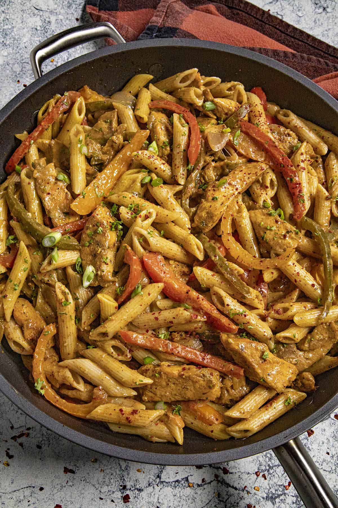

Home
Rasta Pasta

Rasta Pasta is a colorful pasta dish made with a variety of bell peppers, creamy sauce and Caribbean seasonings, inspired by an original Italian recipe, but made with more traditional Jamaican ingredients.
Ingredients Required :
- Olive Oil)
- Onions
- Bell peppers(mix colours)
- Garlic cloves
- Jamaican Jerk Seasoning
- Cocnut Milk
- Parmesean Cheese
- Penne Pasta
- Chicken Breast
- Salt
- Pepper
- Paprika
- Optional :Prawns
- Chicken stock
Steps
- Chop up vegetables and chicken breast
- Cook the Penne to desired texture and carry on in the meantime
- Season the chicken with salt, pepper, paprika and JJS
- Heat the olive oil on medium heat and cook chicken for 6-7 minutes
- Remove the chicken and set aside
- Put the onions and peppers in the pan and let them cook for 5 minutes
- Add the garlic and 1 tablespoon Jamaican jerk seasoning. Cook for 1 minute, stirring.
- Add chicken stock, cocont milk and chicken and let simmer to thicken up
- Stir in the parmesean cheese and ensure food is cooked through before removing from heat
- Drain the pasta and mix with the sauce
- Serve and Enjoy !!!!